1과목: 건축일반
1. 온도, 습도, 기류를 조합하여 인체의 실제 체감(遞減)을 표시하는 척도가 되는 것은?
2. 철골보와 콘크리트 슬래브를 연결하는 전단 연결철물(shear connector)로 사용하는 것은?
3. 상부는 완만한 경사로, 하부는 급경사로 처리한 2단으로 경사진 지붕은?
4. 채광에서 실내의 조도가 옥외의 조도 몇 %에 해당하는가를 나타내는 값은?
5. 벽돌 벽체의 강도를 높이기 위한 방법 중 옳지 않은 것은?
6. 사무소건축의 코어(core) 계획에 대한 설명 중 옳지 않은 것은?
7. 주택의 평면계획에서 공적인 생활을 위한 공간과 가장 거리가 먼 것은?
8. 음의 성질에 관련된 용어에 대한 설명으로 옳지 않은 것은?
9. 실내음향에 대한 설명으로 옳지 않은 것은?
10. 철근콘크리트구조에서 주근(主筋)이라고 볼 수 없는 것은?
11. 사무소 건축에서의 렌터볼 비(rentable ratio)를 가장 잘 설명한 것은?
12. 초등학교 건축계획에 대한 설명 중 옳지 않은 것은?
13. 병원건축에 대한 설명 중 옳지 않은 것은?
14. 목구조에서 평보와 평보를 연결하여 옆 휨을 방지하는 부재는?
15. 건축의 생산수단으로서 사용되는 치수조정(Modular coordination)에 대한 설명으로 옳지 않은 것은?
16. 실내조명의 설계순에서 가장 우선적으로 고려해야 할 사항은?
17. 천장 구성을 그린 다음 도면에 대한 설명 중 옳지 않은 것은?
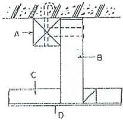
18. 도서관 서고에 대한 계획 중 옳지 않은 것은?
19. 병원의 출입구 동선계획으로 옳지 않은 것은?
20. 건축물의 용도별 수직교통량 예측 중 피크타임(peak time)이 발생하는 시점으로 옳지 않은 것은?
2과목: 위생설비
21. 유체가 관경 50cm인 관 속을 2m/s의 속도로 흐를 때의 유량 Q(m3/s)는?
22. 10℃의 물을 70℃로 가열하여 매시 240kg씩 공급할 때 필요한 가스 용량은? (단, 물의 비열은 4.2kJ/kgㆍK, 가스발열량은 42.000kJ/m3, 열효율은 80% 이다.)
23. 수도직결방식의 급수방식으로 수도 본관으로부터 높이 4m에 있는 샤워기에 급수를 하는 경우, 수도 본관에 요구되는 최저압력은? (단, 샤워기에 요구되는 최저필요압력은 100kPa이며, 관마찰손실수두는 20kPa이다.)
24. 스위블형 신축이음쇠에 관한 설명으로 옳지 않은 것은?
25. 급수방식 중 고가탱크방식에 관한 설명으로 옳지 않은 것은?
26. 다음은 기구배수부하단위에 관한 설명이다. ()안에 알맞은 내용은?
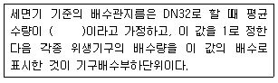
27. 통기관의 설치목적으로 옳지 않은 것은?
28. 급탕설비에서 급탕기기의 부속장치에 관한 설명으로 옳지 않은 것은?
29. 폐쇄형스프링쿨러헤드를 사용하는 스프링클러설비에서 하나의 방호구역의 바닥면적은 최대 얼마 이하가 되도록 하여야 하는가? (단, 격자형배관방식이 아닌 경우)
30. 급탕설비의 급탕배관시 고려사항으로 옳지 않은 것은?
31. 강관의 관이음쇠 중 유니온에 관한 설명으로 옳은 것은?
32. 펌프가 서어징을 일으키는 일반적인 조건으로 옳지 않은 것은?
33. 옥외소화전설비에 사용되는 호스의 구경은?
34. 배수트랩의 필요 조건으로 옳지 않은 것은?
35. 최상부의 배수수평관이 배수수직관에 접속된 위치보다도 더욱 위로 배수수직관을 끌어올려 대기 중에 개구하여 통기관으로 사용하는 부분을 의미하는 것은?
36. 급수설비에서 저수 및 고가탱크에 관한 설명으로 옳지 않은 것은?
37. 다음 중 워터해머의 방지 대책과 가장 거리가 먼 것은?
38. 높이 30m의 고가탱크에 매분 1m3의 물을 공급하기 위해 요구되는 펌프에 직결되는 전동기의 동력은? (단, 마찰손실수두 6m, 흡입양정 1.5m, 펌프효율 50%, 여유율 15%일 경우)
39. 공동주택 부지 내에서 도시가스 사용시설의 배관을 지하에 매설하는 경우 지면으로부터 최소 얼마 이상의 거리를 유지하여야 하는가?
40. 오수가 1일 평균 75m3 유입되고 BOD양이 1일당 15kg 이라면, 이 유입오수의 1일 평균 BOD농도는 ?
3과목: 공기조화설비
41. 증기트랩 중 플로트 트랩에 관한 설명으로 옳지 않은 것은?
42. 냉각수 배관에 관한 설명으로 옳지 않은 것은?
43. 위치수두 10mAq, 압력수두 30mAq, 속도 2.5m/s로 관 속을 흐르는 물의 전수두는?
44. 그림과 같은 전열교환기의 전열효율을 올바르게 나타낸 것은? (단, 난방의 경우이며, X1, X2, X3, X4는 각 공기상태의 엔탈피를 나타낸다.)
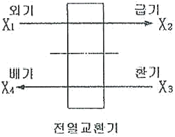
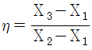
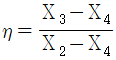
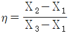
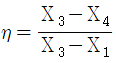
45. 공조기부하에 펌프 및 배관 등의 열부하를 더한 것으로서 냉동기나 보일러 용량을 결정하는데 이용되는 것은?
46. 용량이 386kW인 터보 냉동기에 순환되는 냉수량은? (단, 냉각기 입구의 냉수온도 12℃, 출구의 냉수온도 6℃, 물의 비열 4.19kJ/kgㆍK)
47. 공기조화기의 가열코일 입구와 출구의 공기의 상태값이 변화되지 않는 것은?
48. 건구온도 20℃, 절대습도 0.015kg/kg 인 습공기 6kg의 엔탈피는? (단, 공기 정압비열 1.01kJ/kgㆍK, 수증기 정압비열 1.85kJ/kgㆍK, 0℃에서 포화수의 증발잠열 2501kJ/kg)
49. 취출구 및 흡입구에 관한 설명으로 옳지 않은 것은?
50. 다음 중 에어필터의 효율 측정법이 아닌 것은?
51. 다음 중 열부하에 의한 계산풍량과 관계없이 이것보다 많은 풍량을 취하는 곳과 가장 거리가 먼 것은?
52. 압축식 냉동기의 구성요소 중 냉동의 목적을 직접적으로 달성하는 것은?
53. 공기조화방식 중 진공기방식의 일반적 특징으로 옳지 않은 것은?
54. 사무실의 크기가 10m×10m×3m이고 재실자가 25명, 가스난로의 CO2 발생량이 0.53/h일 때, 실내평균 CO2농도를 5000ppm으로 유지하기 위한 최소 환기회수는? (단, 재실자 1인당의 CO2 발생량은 18L/h, 외기 CO2 농도는 800ppm이다.)
55. 습공기 선도와 관련된 설명으로 옳지 않은 것은?
56. 축류형 송풍기의 종류에 속하지 않는 것은?
57. 공기여과장치에서 입구측의 오염도가 0.3mg/m3, 여과효율이 75%라 할 때, 공기여과장치를 통과하는 오염물질의 양은? (단, 공기여과장치를 통과하는 풍량은 500m3/h이다.)
58. 냉방부하 중 일사에 의한 유리로부터의 취득열량에 관한 설명으로 옳지 않은 것은?
59. 가습장치를 수증기를 만드는 원리에 따라 구분할 경우, 다음 중 수분무식에 속하는 것은?
60. 원형 덕트와 장방형 덕트의 환산식으로 옳은 것은? (단, d : 원형 덕트의 직경 또는 환산직경, a : 장방형 덕트의 장변길이, b : 장방형 덕트의 단변길이)
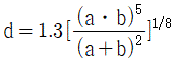
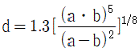
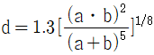
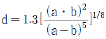
4과목: 소방 및 전기설비
61. DDC 제어방식에 관한 설명으로 옳지 않은 것은?
62. 자동화재 탐지설비의 감지기에 관한 설명으로 옳지 않은 것은?
63. 미리 정해진 순서에 따라 제어의 각 단계를 순차적으로 행하는 자동 제어는?
64. 다음 회로의 합성저항은?
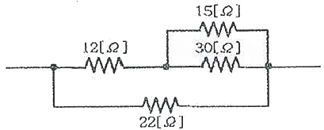
65. 다음의 엘리베이터 조작방식 중 무운전원 방식에 속하는 것은?
66. 할로겐 램프에 관한 설명으로 옳지 않은 것은?
67. 어떤 회로에 전압 220[V]로 전류 6[A]가 흐르고 있다. 그 위상차가 30˚일 때 전력[W]은?
68. 다음 중 3상 유도전동기의 기동법에 속하지 않는 것은?
69. 수용장소의 충전기설비 용량에 대한 최대 수용전력의 비율을 백분율로 나타낸 것은?
70. 전기설비의 특별고압측에서 사고전류를 차단하는 장치인 전력퓨즈(Power Fuse)에 관한 설명으로 옳은 것은?
71. 온도 변화를 검출하는 열전대에 적용되는 법칙은?
72. 비상콘센트설비에서 비상콘센트의 설치 높이로 옳은 것은?
73. 어느 도체의 단면에 2시간 동안 7200[C]의 전기량이 이동했다고 하면 이 때 흐르는 전류는?
74. 두 전하 사이에서 일어나는 정전기 현상에 관한 설명으로 옳지 않은 것은?
75. 평형 3상 교류에서 각 상간의 위상차는 얼마인가?
76. 부동충전방식의 일종으로 자기방전량만을 항상 충전하는 축전지의 충전방식은?
77. 선로나 간성에 고조파 전류를 발생시키는 전기기기가 있을 경우, 이에 대한 대책으로 옳지 않은 것은?
78. 멀티미터(테스터)로 측정할 수 없는 것은?
79. 굵기가 다른 절연전선을 동일 관내에 넣는 경우의 금속관의 굵기는 전선의 피복절연물을 포함한 단면적의 총합계가 관내단면적의 최대 몇 %이하가 되도록 선정해야 하는가?
80. 보일러의 자동제어에 해당하지 않는 것은?
5과목: 건축설비관계법규
81. 장례식장의 용도로 쓰이는 건축물의 집회실로서 그 바닥 면적이 200m2인 경우 반자의 높이는 최소 얼마 이상이어야 하는가? (단, 기계환기장치를 설치하지 않은 경우)
82. 외기에 직접 면하고 1층 또는 지상으로 연결된 출입문을 방풍구조로 하지 않을 수 있는 경우에 해당하지 않는 것은?
83. 건축물의 에너지절약 설계기준에 따른 건축부문의 권장사항으로 옳지 않은 것은?
84. 건축허가신청에 필요한 설계도서 중 배치도에 표시하여야 할 사항에 속하지 않는 것은?
85. 100세대 이상의 아파트를 신축하는 경우 시간당 최소 몇 회 이상의 환기가 이루어질수 있도록 자연환기설비 또는 기계환기설비를 설치하여야 하는가?
86. 다음 소방시설 중 경보설비에 속하지 않는 것은?
87. 지하층의 구조 및 설비와 관련된 기준 내용 중 거실의 비닥면적의 합계로 설치기준을 정하는 것은?
88. 다음 중 방화구조에 해당하지 않는 것은?
89. 다음은 비상용승강기의 승강장 구조에 관한 기준 내용이다. ()안에 알맞은 것은?
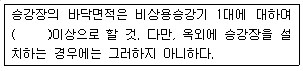
90. 건축물의 에너지절약 계기준상 단열계획에 대한 건축부문의 권장사항으로 옳지 않은 것은?
91. 업무시설로서 건축허가등을 함에 있어서 미리 소방본부장 또는 소방서장의 동의를 받아야 하는 대상 건축물의 연면적 기준은?
92. 문화 및 집회시설 중 공연장의 개별 관람석의 바닥면적이 500m2인 경우 개별 관람석 출구의 유효너비의 합계는 최소 얼마 이상이어야 하는가?
93. 특정소방대상물이 복합건축물인 경우, 공동 소방안전관리자를 선임하여야 하는 연면적 기준은?
94. 다음 중 대수선에 해당하지 않는 것은?
95. 다음은 피난안전구역에 관한 기준 내용이다. ()안에 알맞은 것은?
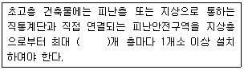
96. 다음은 건축법상 리모델릴에 대비한 특례 등에 관한 기준 내용이다. 밑중 친 대통령령으로 정하는 구조에 해당되지 않는 것은?
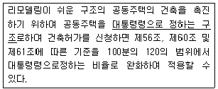
97. 건축법령상 단독주택에 해당하지 않는 것은?
98. 다음 중 6층 이상의 거실면적의 합계가 6000m2인 경우, 설치하여야 하는 승용승강기의 최소 대수가 가장 많은 것은? (단, 8인승 승용승강기의 경우)
99. 공동주택과 오피스텔의 난방설비를 개별난방방식으로 하는 경우에 관한 기준 내용으로 옳지 않은 것은?
100. 문화 및 집회시설 중 공연장으로서 모든 총에 스프링클러 설비를 설치하여야 하는 최소 수용인원은?